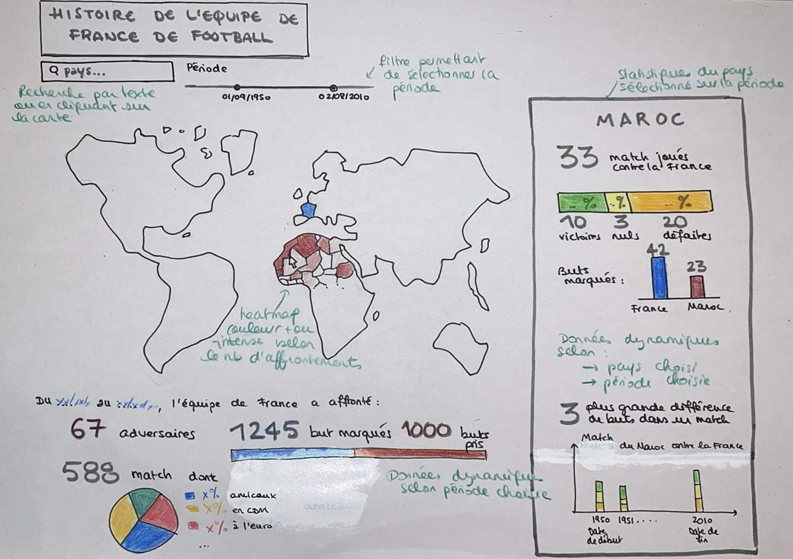

Visualisation principale
Histoire de l'Equipe de France de football
Auteurs
Chloé DUBRAY, Nawfal MELLAH et Diane VINCENT.
Résumé
L'objectif de cette visualisation est de présenter des statistiques intéressantes de l'équipe de France de football avec une carte interactive. De statistiques globales ainsi que par pays sont présentées. L'utilisateur peut utiliser un filtre temporel pour s'intéresser à une période précise et sélectionner un pays adversaire pour avoir des statistiques sur les matchs contre ce pays. Le prototype ci-dessous présente l'idée initiale de la mise en page et du choix de graphiques et visualisations à montrer.
Les données sur les résultats de l'Equipe de France de Football ont été obtenues à partir de la page Wikipédia https://fr.wikipedia.org/wiki/Liste_des_matchs_de_l%27%C3%A9quipe_de_France_de_football_par_adversaire en s'inspirant du projet de
Paul-Antoine Chevalier : https://pachevalier.github.io/coupedumonde/index.html#timeline.
Les données geojson ont été obtenues sur le site https://geojson-maps.ash.ms/. Des modifications ont été apportées sur les pays du Royaume-Uni pour les séparer.
Nous avons choisi de s'appuyer sur une carte du monde en visualisation principale en encodant le nombre de matchs par une échelle de couleurs par quantile avec une légende associée. On peut ainsi facilement voir les pays que le France n'a pas affronté (gris) et les adversaires les plus récurrents (rouge plus intense). L'utilisateur peut alors interagir avec la carte : il peut voir le nom du pays et le nombre de matchs en survolant la carte et il peut cliquer sur le pays qui l'intéresse pour afficher un volet avec des statistiques sur les rencontres de l'équipe de France avec ce pays. Les couleurs utilisées dans la visualisation correspondent aux couleurs de l'équipe de France.
Pour les statistiques suivantes, nous avons utilisé la biblitothèque D3.
- Pour le nombre de victoires, défaites et matchs nuls, nous avons décidé de représenter ces nombres sous forme de stacked bar avec 3 couleurs pour les 3 catégories. La taille des barres dépend de la proportion de chaque catégorie.
- Pour le type de compétition, nous avons choisi de répesenter la proportion de matchs amicaux et matchs officiels sous forme de pie chart.
- Pour le nombre de buts marqués par chaque équipe, nous avons choisi un bar chart qui permet de voir immédiatement quelle équipe a marqué le plus de buts.
- Pour avoir des données plus précises sur chaque match, nous les avons représenté sous forme de timeline, en s'inspirant de la visualisation de Paul-Antoine Chevalier. Les matchs sont regroupés par 4 ans, comme la fréquence de la plupart des compétitions officielles (Coupe du Monde, Euro), et on représente chaque match par un carré avec la couleur encodant l'issue du match (victoire/défaite/match nul) pour la France. L'utilisateur peut interagir avec ce graphique en survolant les carrés, il peut alors voir la date du match, la compétition et le score.
- Le plus grand écart de buts est représenté sous forme de nombre avec le texte "Plus grand écart de buts", en survolant ce texte, l'utilisateur peut voir le match correspondant sur la timeline, la date, la compétition et le score du match.
- Dans les statistiques globales, le nombre de matchs, d'adversaires, de buts marqués et de buts pris sont également représentés sous forme de nombre et texte. Comparer le nombre de buts marqués et buts pris sur un nombre de matchs aussi important ne semblait pas pertinent.
Pour sélectionner une période, nous avons choisi d'utiliser un slider pour sélectionner une année de début et une année de fin. Pour sélectionner un pays, on peut cliquer sur la carte ou chercher un pays par son nom avec un élément de classe autocomplete. Nous avons utilisé la bibliothèque JQuery pour ces deux éléments.
Résultats intéressants
Limites
- Certains pays comme l'Allemagne ou la Russie ont changé de nom (RDA/RFA et URSS) donc certaines données ne sont pas accessibles. Les statistiques globales s'appuient sur tous les pays rencontrés mais les statistiques par pays ne sont pas complètes.
- Certaines données peuvent ne pas être parsées parfaitement. Il peut y avoir des caractères superflus dans les textes (e.g. la compétition).
- Pour la barre du nombre de victoires/défaites/matchs nuls, les textes peuvent parfois se superposer.
Prototype

Liens